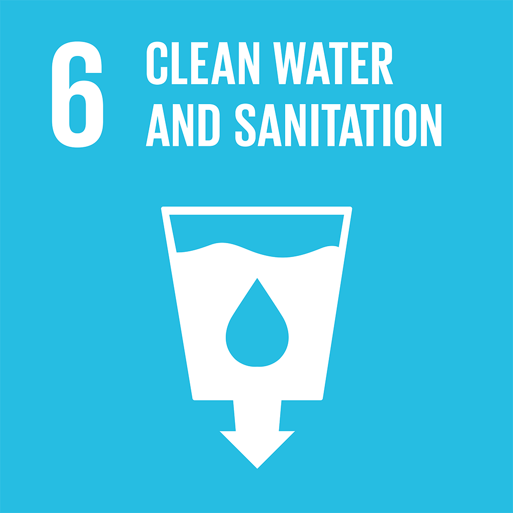
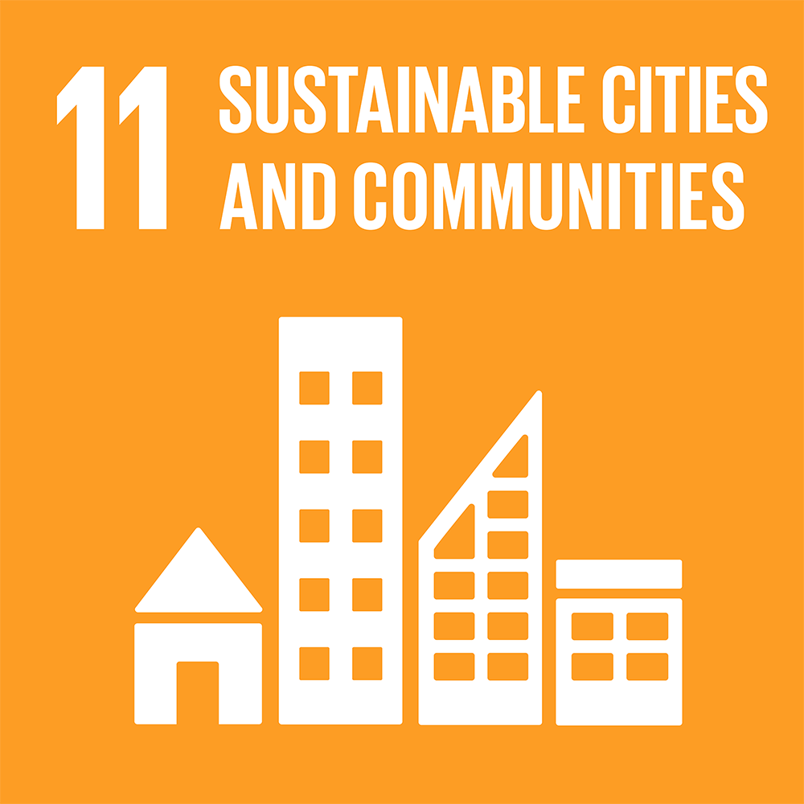
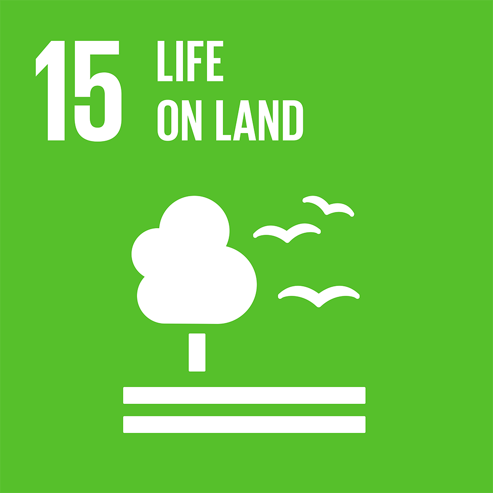
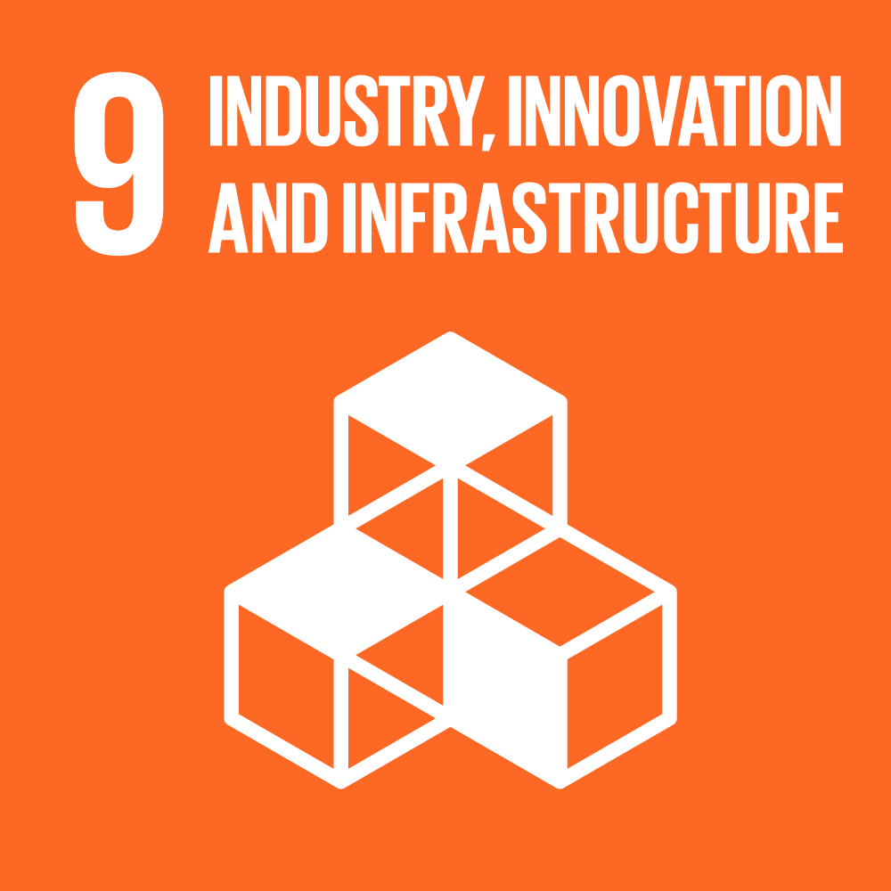
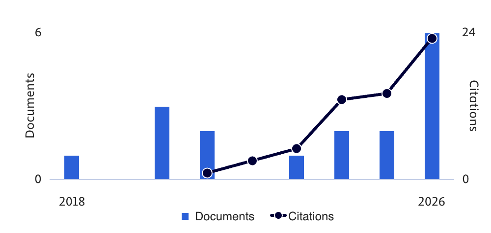

Curriculum Vitae
Academic curriculum vitae and publication record.
Dr. Wibowo Harry Sugiharto
Lecturer / Researcher, Department of Informatics Engineering
Universitas Muria Kudus, Jl. Lingkar Utara, Gondangmanis, Bae, Kudus, Central Java 59352, Indonesia
Research Focus
Research concentrates on Internet of Things (IoT) architectures, real-time sensor networks, physics-informed modeling, explainable AI, and spatio-temporal graph neural networks for environmental monitoring and assessment across three primary domains:
1. Water
Real-time river and freshwater telemetry, multi-sensor physicochemical assessment (pH, DO, BOD, TDS, temperature, turbidity), sub-index curve modeling, and deterministic edge-IoT Water Quality Index (IoT-WQI) computation.
2. Air
Urban air quality monitoring, distributed sensor arrays for carbon monoxide (CO) telemetry, interval type-2 fuzzy logic, and time-series visibility graph regression for pollutant forecasting.
3. Land
Satellite remote sensing, land cover classification, Amazon deforestation detection, and hybrid Vision Transformer with Graph Neural Network (ViT-GNN) spatial modeling.
SDGs Focus
Alignment with the United Nations Sustainable Development Goals (SDGs), evaluated from published study objectives, sensor deployments, and environmental datasets:
| SDG | Goal & Targets | Research Stream | Evidence in Published Works |
|---|---|---|---|
|
 |
SDG 6: Clean Water and Sanitation (Targets 6.3, 6.6) |
Water | Real-time river and freshwater quality monitoring (Troso River deployments, 109 Australian monitoring stations in GIFT), DO/BOD/pH/TDS/turbidity telemetry, and low-cost IoT-WQI screening for early pollution detection. |
|
 |
SDG 11: Sustainable Cities and Communities (Target 11.6) |
Air | Urban carbon monoxide (CO) telemetry, distributed city sensor arrays, interval type-2 fuzzy modeling, and multi-horizon CO forecasting on a 6-year Semarang urban dataset. |
|
SDG 3: Good Health and Well-being (Target 3.9) |
Air & Water | Exposure risk mitigation against toxic urban CO pollution and waterborne contaminants through early warning telemetry and safety-constrained water quality alert models. | |
|
 |
SDG 15: Life on Land (Targets 15.1, 15.2) |
Land | Lightweight hybrid ViT-GNN and Transformer-GNN frameworks for Amazon biome land cover mapping and forest/deforestation monitoring under computational resource constraints. |
|
 |
SDG 9: Industry, Innovation, and Infrastructure (Target 9.5) |
Cross-Cutting (IoT & Edge) | WSN topology QoS optimization, asynchronous edge queueing, dual-layer XAI sensor validation, and deterministic curve-fitting equations reducing compute and payload bandwidth overhead by over 83%. |
Academic Qualifications
| Degree | Institution | Field | Year |
|---|---|---|---|
| Ph.D. | Universitas Diponegoro, Semarang, Indonesia | Information Systems | 2020 - 2025 |
| Ir. (Professional Engineer) | Universitas Katolik Widya Mandala, Surabaya, Indonesia | Electrical and Informatics Engineering | 2024 |
| M.Sc. | Universitas Diponegoro, Semarang, Indonesia | Information Systems | 2014 - 2016 |
| B.Sc. | Universitas Semarang, Semarang, Indonesia | Informatics Engineering | 2009 - 2013 |
Doctoral Dissertation: An IoT-Based Water Quality Index for Monitoring Framework in Mitigation and Early Detection of Pollution
Supervisor: Prof. Dr.rer.nat. Ir. Heru Susanto, S.T., M.M., M.T.
Employment & Academic Appointments
| Position | Institution / Program | Period |
|---|---|---|
| Head of Laboratory | Department of Informatics Engineering, Universitas Muria Kudus, Indonesia | 2025 - Present |
| Lecturer | Department of Informatics Engineering, Universitas Muria Kudus, Indonesia | 2016 - Present |
| Visiting Early Career Researcher (ECR) | ASEAN Research Collaboration Project (Host institution: University of Adelaide, Australia). Program administered by the Australian Government Department of Education through the International Education Innovation Fund (IEIF), delivered in partnership with the RMIT Asia Hub. | 2025 |
Research Experience
1. Edge-IoT Water Quality Index (IoT-WQI) & Sub-Index Modeling (Doctoral & Grant-Funded Research, 2019 - 2026) Water
Designed an autonomous edge-IoT water quality monitoring and screening architecture combining continuous Gaussian and polynomial sub-index curve fitting, grouped AHP parameter weighting, asynchronous telemetry queueing, and wireless dissolved-oxygen/BOD monitoring at Troso River, Jepara.
Funding: PKPT Competitive Research Grant, Ministry of Education, Culture, Research, and Technology, Indonesia (2019 - 2020; ~USD 30,350 est.).
Outputs: Scientific Reports (2026, 10.1038/s41598-026-61061-0); Discover Water (2025, 10.1007/s43832-025-00246-6); MMEP (2024, 10.18280/mmep.110915); I2M (2024, 10.18280/i2m.230401); ISI (2023, 10.18280/isi.280403); JPCS (2021, 10.1088/1742-6596/1943/1/012016); AER (2021, 10.2991/aer.k.211129.004).
2. Safety-Constrained Machine Learning for Water Quality Screening (IEIF ECR Collaboration, University of Adelaide, 2025) Water
International collaboration with Dr. Wei Zeng (University of Adelaide, Australia) under the ASEAN Research Collaboration Project (IEIF / RMIT Asia Hub), investigating Random Forest optimization with Penalized Genetic Algorithm (RF-PGA) constraints for edge-based water quality hazard screening.
Funding: ASEAN Research Collaboration Project, Australian Government Department of Education (IEIF) & RMIT Asia Hub (2025; ~USD 12,900 est.).
Outputs: Manuscript under review at Discover Sustainability (With Editor).
3. Spatio-Temporal & Explainable AI for Sensor-Resilient Water Monitoring (International Collaborations, 2025 - 2026) Water
Developed the Graph-Informed Temporal Fusion Transformer (GIFT) integrating GNN spatial priors with Temporal Fusion Transformer modeling across Australian river monitoring networks, alongside a Dual-Layer XAI Validation framework (in collaboration with MMSU, Philippines) for low-cost sensor noise resilience and physical consistency.
Funding: Universitas Muria Kudus International Collaboration Grant (2025; ~USD 2,430 est.).
Outputs: Discover Artificial Intelligence (2026, 10.1007/s44163-026-01966-x); Discover Sustainability (2026, 10.1007/s43621-026-04210-9).
4. Urban Carbon Monoxide Telemetry & Multi-Horizon Forecasting (2018 - 2026) Air
Conducted urban air quality telemetry and carbon monoxide (CO) forecasting research spanning distributed CO sensor information systems, interval type-2 fuzzy time series (IT2FCM, IT2FCM-Markov Chain), time-series visibility graph regression (TSVG-HGBR), and STL-decomposed ResNet-Transformer modeling.
Outputs: Discover Artificial Intelligence (2026, 10.1007/s44163-026-02286-w); Discover Sustainability (2026, 10.1007/s43621-026-05283-2); MMEP (2025, 10.18280/mmep.121229; 10.18280/mmep.120617); E3S Web of Conferences (2018, 10.1051/e3sconf/20187305026).
5. Lightweight Hybrid Vision Transformer-GNN for Tropical Land Cover & Deforestation Mapping (2025 - 2026) Land
Developed hybrid spatial deep learning frameworks (ViT-GNN RFFA and TE-GNN RFFA) combining engineered spectral-textural descriptors, graph structural priors, and multi-branch feature fusion analysis for Amazon biome land cover classification and deforestation detection.
Outputs: Scientific Reports (2026, 10.1038/s41598-026-59674-6); Discover Artificial Intelligence (2026, 10.1007/s44163-026-01709-y).
Grants and Awards
| Title | Organization | Funding (USD Est.) | Year |
|---|---|---|---|
| ASEAN Research Collaboration Project (IEIF ECR Placement Fellowship) | Australian Government Department of Education (IEIF), delivered with RMIT Asia Hub | ~USD 12,900 | 2025 |
| International Collaboration Research Grant (Interpretable AI for Low-Cost Environmental Monitoring) | Universitas Muria Kudus (Internal Research Scheme) | ~USD 2,430 | 2025 |
| PKPT Competitive Research Grant (Multi-Year Water Quality Wireless Sensor System) | Ministry of Education, Culture, Research, and Technology, Indonesia | ~USD 30,350 | 2019 - 2020 |
Note: Estimated USD amounts are converted using historical annual average exchange rates for each award period (AU$ 20,000 at 2025 AUD/USD; IDR 40.0M at 2025 IDR/USD; IDR 435.5M total across 2019 - 2020 IDR/USD).
Document & Citation Trends (Scopus)

Selected Publications
Selected peer-reviewed journal articles (13) and conference proceedings (3) from Scopus Author ID 57210989011, grouped by research stream in descending chronological order. Scopus quartile indicators (Q1 to Q3) are shown for ranked journals; unranked journals and conference proceedings are labeled by publication type.
1. Water (7 Journal Articles, 2 Conference Proceedings)
- Q1 Sugiharto, W.H., Prasetijo, A.B., Susanto, H. (2026). "An Edge-IoT Water Quality Index (IoT-WQI) for First-Line Screening: Accelerating Computation via Deterministic Mathematical Equations and Grouped AHP." Scientific Reports (Nature Portfolio), July 2026. DOI: 10.1038/s41598-026-61061-0
- Q1 Sugiharto, W.H., Primadasa, R., Murti, A.C., Nindyasari, R., Susanto, H. (2026). "Graph-Informed Temporal Fusion Transformer (GIFT) for Spatio-Temporal Water Quality Classification." Discover Artificial Intelligence (Springer Nature). DOI: 10.1007/s44163-026-01966-x
- Q1 Sugiharto, W.H., et al. (2026). "Explainable AI with Dual-Layer Validation Framework for Ensuring Noise Resilience and Physical Consistency in Low-Cost Sustainable Water Quality Monitoring." Discover Sustainability (Springer Nature). DOI: 10.1007/s43621-026-04210-9
- Journal Article Sugiharto, W.H., Susanto, H., Prasetijo, A.B. (2025). "Evaluating Polynomial and Gaussian Fitting Techniques for Accurate Sub-Index pH Modeling in Water Quality Index Development." Discover Water (Springer Nature), Vol. 5, No. 1. DOI: 10.1007/s43832-025-00246-6
- Q2 Sugiharto, W.H., Susanto, H., Prasetijo, A.B. (2024). "Evaluating Polynomial and Gaussian Approaches for Temperature Change Sub Index of Water Quality Index for Smart Environmental Management." Mathematical Modelling of Engineering Problems, Vol. 11, No. 9, pp. 2425-2436. DOI: 10.18280/mmep.110915
- Q3 Sugiharto, W.H., Susanto, H., Prasetijo, A.B. (2024). "Selecting IoT-Enabled Water Quality Index Parameters for Smart Environmental Management." Instrumentation Mesure Métrologie, Vol. 23, No. 4, pp. 253-263. DOI: 10.18280/i2m.230401
- Q3 Sugiharto, W.H., Susanto, H., Prasetijo, A.B. (2023). "Real-Time Water Quality Assessment via IoT: Monitoring pH, TDS, Temperature, and Turbidity." Ingénierie des Systèmes d'Information, Vol. 28, No. 4, pp. 823-831. DOI: 10.18280/isi.280403
- Conference Proceeding Sugiharto, W.H., et al. (2021). "Online Monitoring of Water Pollution Level Based on Dissolved Oxygen (DO) and Biochemical Oxygen Demand (BOD) Using Wireless Sensor System." Journal of Physics: Conference Series, Vol. 1943, No. 1, 012016. DOI: 10.1088/1742-6596/1943/1/012016
- Conference Proceeding Sugiharto, W.H., et al. (2021). "Online Pollution Level Measurement for Water Quality Monitoring System Using Internet of Things." Advances in Engineering Research, Proceedings of ICIST 2020. DOI: 10.2991/aer.k.211129.004
2. Air (4 Journal Articles, 1 Conference Proceeding)
- Q1 Sugiharto, W.H., Bardadi, A., Ghozali, M.I., Sukri, H., Murti, A.C. (2026). "Time-series visibility graph and histogram-based gradient boosting regressor (TSVG-HGBR) for robust multi-horizon urban carbon monoxide forecasting." Discover Artificial Intelligence (Springer Nature), Vol. 6, article no. 1207. DOI: 10.1007/s44163-026-02286-w
- Q1 Sugiharto, W.H., et al. (2026). "Forecasting Urban Carbon Monoxide Concentrations Using a Hybrid ResNet Transformer with STL Decomposition." Discover Sustainability (Springer Nature). DOI: 10.1007/s43621-026-05283-2
- Q2 Bardadi, A., Warsito, B., Surarso, B., Sugiharto, W.H. (2025). "Interval Type-2 Fuzzy C-Means (IT2FCM) for Robust Forecasting of Carbon Monoxide Concentrations in Urban Air Quality Monitoring." Mathematical Modelling of Engineering Problems, Vol. 12, No. 6, pp. 2021-2030. DOI: 10.18280/mmep.120617
- Q2 Bardadi, A., Warsito, B., Surarso, B., Sugiharto, W.H. (2025). "Managing Partitioning Uncertainty and Transition Ambiguity in Fuzzy Time Series: A Robust IT2FCM-Markov Chain Approach." Mathematical Modelling of Engineering Problems, Vol. 12, No. 12, pp. 4406-4412. DOI: 10.18280/mmep.121229
- Conference Proceeding Sugiharto, W.H., Riadi, A.A., Ghozali, M.I. (2018). "Web Based Information System of Carbon Monoxide Pollution." E3S Web of Conferences, Vol. 73, 05026. DOI: 10.1051/e3sconf/20187305026
3. Land (2 Journal Articles)
- Q1 Sugiharto, W.H., et al. (2026). "A Lightweight Hybrid ViT-GNN Framework for Data-Centric Land Cover Mapping in the Amazon Biome Using Graph Structural Priors." Scientific Reports (Nature Portfolio). DOI: 10.1038/s41598-026-59674-6
- Q1 Sugiharto, W.H., Prasetijo, A.B., Susanto, H. (2026). "Comparative Analysis of Feature Fusion Strategies in a Transformer Encoder, GNN Framework for Amazon Deforestation Detection." Discover Artificial Intelligence (Springer Nature), July 2026. DOI: 10.1007/s44163-026-01709-y
Manuscripts Under Review / With Editor
- Water Sugiharto, W.H., Zeng, W., et al. "RF-PGA: Random Forest with Penalized Genetic Algorithm for Edge-Based Water Quality Screening." Discover Sustainability. Status: With Editor.
Technical Skills
| Category | Details |
|---|---|
| Programming & Web | Python, C/C++ (Embedded Firmware), PHP, JavaScript |
| AI/ML & Mathematical Modeling | PyTorch, PyTorch Geometric, Scikit-learn, Tree Ensembles (Random Forest, HGBR), Interval Type-2 Fuzzy Logic (IT2FCM), Curve Fitting, Analytic Hierarchy Process (AHP) |
| Architectures & Signal/Graph Methods | Graph Neural Networks (GNN), Vision Transformer (ViT), Temporal Fusion Transformer (TFT), ResNet, Time-Series Visibility Graphs (TSVG), STL Decomposition |
| Optimization, XAI & Validation | SHAP, Penalized Genetic Algorithm (PGA), Optuna, Spatial Cross-Validation, Non-Parametric Tests (Friedman, McNemar) |
| Embedded Systems & Edge IoT | Edge/Fog Computing, Sensor Interfacing (Physicochemical & CO Arrays), Asynchronous Telemetry Queueing, ESP32, Raspberry Pi, Arduino, LattePanda |
Professional Affiliations
- Member, Indonesian Association for Information and Computing Technology (APTIKOM)
- Member, Institution of Engineers Indonesia (PII), IPP Level
- Contributor, Industrial Instrumentation System Research Center, Universitas Diponegoro
- Member, Institute of Electrical and Electronics Engineers (IEEE) (Computer Society, Young Professionals, Indonesian Section)
Language Proficiency
| Language | Reading | Writing | Listening | Speaking |
|---|---|---|---|---|
| Indonesian | Native | Native | Native | Native |
| English | Intermediate | Intermediate | Intermediate | Intermediate |